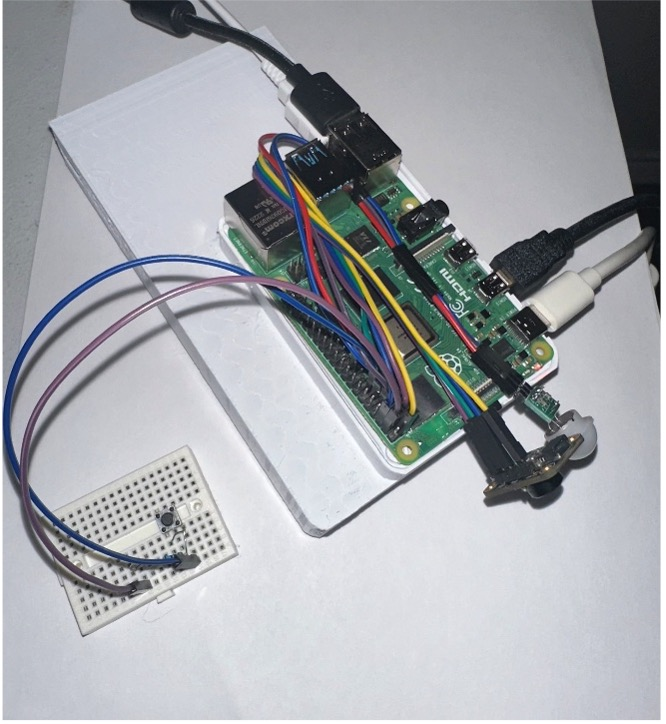

About
Heatmap Monitoring Hardware
Acknowledgements
We sincerely thank our advisor, Dr. Pradhumna Shrestha, for his invaluable guidance and mentorship throughout this project. We also extend our gratitude to the College of Engineering for their academic support, and to our internal sponsor, the Engineering Dean's Senior Design Fund, for making our senior design project possible.
Abstract
The Heatmap Monitoring and Alert system is designed to provide temperature monitoring in a wide range of environments through the use of different sensors and wireless networks. The system will be able to monitor, report, and respond to high temperature individuals in different areas of a facility. The system will periodically monitor heatmap readings and will activate when movement is detected in a specific area in order to provide energy efficiency. The system will use wireless data transmission to store data in a central server in order to provide functionality in large facilities. Temperature readings, heatmaps, and recent activity with timestamps in the locations being monitored will be stored in the secure database. The system will use a website and a mobile application to monitor the system. These two interfaces will provide visualizations overlaid on a digital map of the building of areas that have been flagged due to a high temperature reading. They will also provide recent activity logs of specific areas in the environments being read throughout the day. The mobile application will additionally add the capability of sending push notifications to alert users of high temperature readings. These alerts will also include the location and the timestamp of the reading in order to allow users to identify potential safety risk areas. The heatmap monitoring and alert system will optimize management and enhance the safety of facilities by determining high risk areas and alerting users to ensure safety.